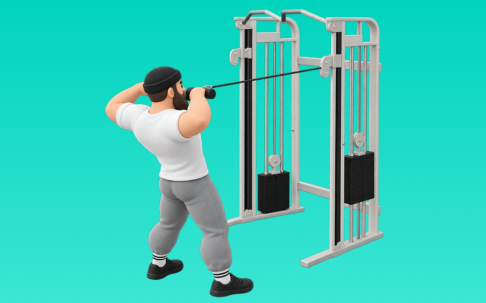

フェイスプル

フェイスプルとは、ケーブルを使って「引く」動作で肩後部（三角筋後部）、僧帽筋、ローテーターカフを鍛える種目です。可動域全体で張力が抜けにくいのが特徴で、反動を抑えてコントロールしながら反復します。背中の厚み・広がり作りや姿勢改善が期待できます。
- 対象部位
- 背中
- 器具
- ケーブル
- 記録形式
- 重量・回数
- 別名
- フェイスプルダウン
YouTube動画
-
三角筋中部～後部を鍛えるフェイスプルのやり方【筋トレ】
-
フェイスプル(ケーブル)のやり方をご紹介！ 三角筋(肩)後部筋トレの優秀種目。『僧帽筋に効かせないフォーム』とは？
-
【三角筋後部の必須種目】効かない人必見！IFBB PRO 寺島遼がフェイスプルを徹底解説！
-
【肩トレ】メロン肩を作るには必須！三角筋後部の最強種目フェイスプル徹底解説！
-
【筋トレ】フェイスプルでケガなく三角筋後部を鍛える方法を伝授します！
-
【フェイスプル】三角筋後部に効くコツをケーブル・ダンベル・チューブなど種類別に解説！
-
肩トレのフェイスプルについてジュラシック木澤が思ってること
-
【フェイスプル】筋トレで肩の怪我をしたくない方向けのトレーニングと解剖学的解説【インナーマッスル】
-
【初心者】ケーブルを使ったフェイスプルのやり方 | 肩の裏側に効果的に効かせる【ビーレジェンド プロテイン】
-
フェイスプルが効かない原因と正しいやり方【初心者向け】
-
フェイスプル（三角筋後部）【糸井トレーナー】
-
三角筋後部を狙うならコレ！ケーブルフェイスプル
YouTubeショート
-
フェイスプル（Face Pull）のやり方とフォーム
-
みなさんはフェイスプルやってますか？持田選手（おかずもち）がしっかり三角筋後部に効くトレーニングをレクチャーしてくれました！#筋トレ #volix #肩トレ #ちょこっと惜しい #三角筋
-
丸く立体感のある肩を作るフェイスプルのやり方※エゴイスト
-
横川くんから学ぶ肩トレ💪 ※最後の2種目はケーブルの引き方が違います（効いている部位について名言はされていませんでしたので予測です）
-
三角筋を鍛えたいならこの3種目 #フィットネス #筋トレ
-
トレーナーが1分解説「フェイスプル」の正しいやり方とコツ【肩/マシン】
-
肩をデカくする必須種目【フェイスプル】#筋トレ #パーソナルトレーナー #肩トレ
-
みんなフェイスプルできてる？髙山（たかやま）がバチバチに効くフェイスプルのやり方をレクチャーしてくれました！今日からやってみてや！#筋トレ #たかやま #肩トレ #三角筋
-
ばちばちに効く肩のリア種目
-
背中が成長しないラットプルダウン
-
ケーブルフェイスプルフォーム解説 #ダイエット #筋トレ #肩トレ #プロテイン #パーソナルジム #くびれ
-
みんな肩を大きくするトレーニングできてる？髙山（たかやま）がバチバチに効くフェイスプルをレクチャーしてくれました！今日からやってみてや！#筋トレ #たかやま #肩トレ #フェイスプル
-
最大ストレッチと収縮はケーブル一択
-
肩の後側を鍛える正しいフェイスプルの方法！#shorts
-
【ベンチプレス上達】肩の可動域を劇的に改善するフェイスプル
-
フェイスプルのポイントは〇〇！！
-
顔の前に引く！ケーブル･フェイスプル【糸井トレーナー】
-
正しいラットプルダウン4つのポイント【筋トレ】
-
【肩のインナー】肩のケガを防ぐ「フェイスプル」のやり方
-
【ダンベル】背中トレ4選 #筋トレ
-
【フェイスプルのポイント】#筋トレ#トレーニング#筋トレ男子#筋トレ女子#筋肥大#脚トレ#筋トレ解説#筋トレ初心者#肩トレ
-
個人的に最も効果のある三角筋の種目3選を紹介 #筋トレ #フィットネス
-
本物の懸垂とは？米海兵隊が教える正しいフォーム 😎 #懸垂 #米海兵隊 #筋トレ #軍事訓練 #ショート雑学 #shorts
-
そのフェイスプル、“引いてるだけ”になってない？リアが弱い人、ほぼフォーム原因です。#フェイスプル #三角筋後部 #肩トレ #メロン肩 #筋トレ
-
正しいダンベルロウ4つのポイント #筋トレ
-
デッドリフトの正しいやり方 #フィットネス #筋トレ #デッドリフト
-
【ダンベル】肩トレ3選 #筋トレ
-
【筋トレ解説】ケーブルプルオーバー #筋トレ #筋トレ解説 #ケーブルプルオーバー
-
三角筋後部を狙うならコレ！ケーブルフェイスプル
-
【30秒でわかる】リアレイズ解説
-
三角筋後部を鍛えるフェイスプル
-
【チェストサポートロウ】怪我をせず僧帽筋を鍛える正しいフォーム解説
動作方法
- 体幹を安定させ、背中が丸まらない姿勢を作る
- 肘を後方へ引き、肩甲骨を寄せる
- 勢いを使わず、ゆっくり戻す
動作ポイント
- 背中を丸めない
- 首に力を入れすぎない
- 戻しを速くしすぎない
ワンポイントアドバイス
- 腕ではなく背中で引く感覚を優先する
- 反動が増えたら重量を一段下げる
目的別回数設定
目的や体力に応じた一般的な目安です。無理のない範囲で調整してください。
- 筋力アップ
- 1〜5回
- 筋肥大
- 6〜12回
- 持久力アップ
- 13〜20回
YouTube動画について
動画はYouTubeの公開情報をもとに表示しています。内容は投稿者によるもので、Biggrによる監修ではありません。
アプリを入手
筋トレやトレーニングの記録はBiggrにお任せください。今すぐ無料で使い始められます。